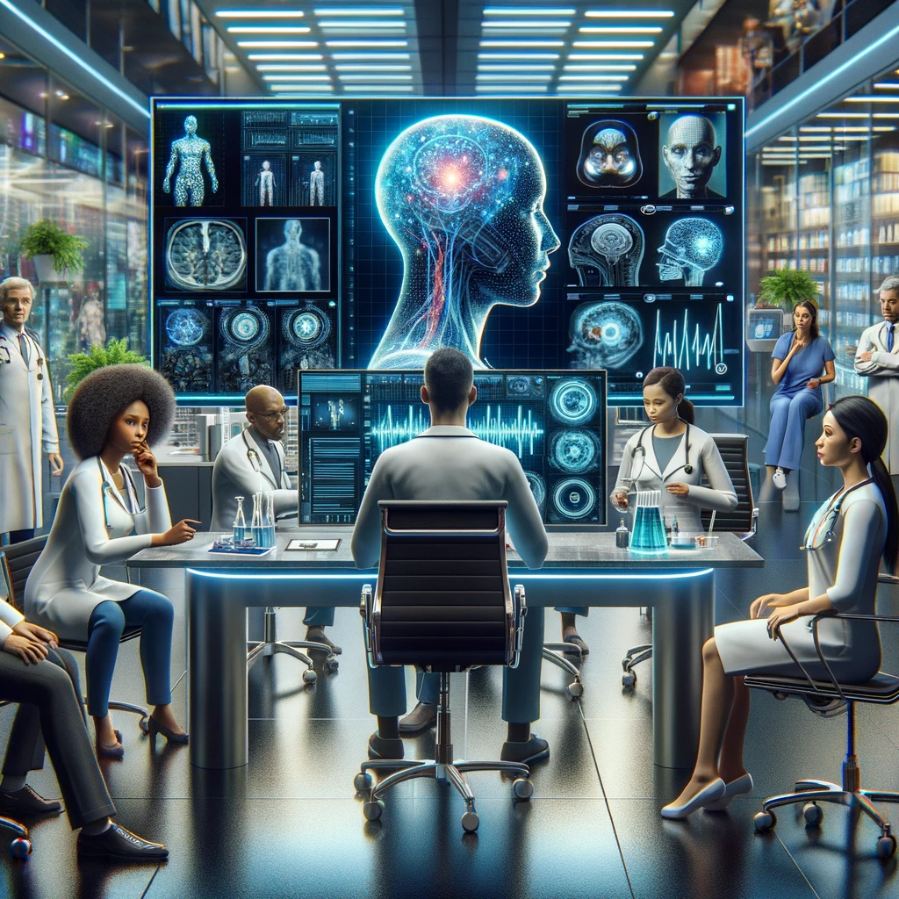

Summary
AI and large language models (LLM) are slowly taking away value from jobs that used to require a lot of schooling, like medicine and law. It will even come for pure software development jobs. What AI cannot replace in the near term is specialized knowledge, skills that can only be obtained through apprenticeships. In the future, we need to focus more on gaining strong domain expertise across business, science, and engineering. But only in ways where specialized knowledge is needed, not simple skill acquisition that a LLM can do faster and cheaper. Going to a coding bootcamp to learn how to build web apps will help you make money this year at a company, but that same company might kick you to the curb three years from now when GitHub Copilot can code the entire app in a day.
More Specialization, More Knowledge
Which jobs require the most schooling? This is a good proxy for how much knowledge someone has to attain before they are qualified to work in a specific job. Doctors and lawyers seem to require the most schooling before they can start their careers. Most likely because of all of the information they have to memorize and load into their head. The more specialized someone’s skills in a domain like medicine, the more money they can make. What’s interesting is that new large language models are becoming very good at the same thing, and can be trained in months, not years. How will this impact these high status, high pay jobs? Specialization will go through a fundamental shift in the age of AI.
Story Time
I recently had to get my knee checked out by a doctor. I tweaked it pretty good playing kickball at my grandma’s 90th birthday party (story for a different time). Most of my time spent getting my knee examined was not actually interacting with the doctor I came to see. Getting checked into the system, filling out forms, getting an xray. All things where the doctor was no where to be found. The doctor did finally come in to my room, after waiting a while, and briefly talked to me for two minutes. Yes, two minutes. Almost as if they couldn’t wait to leave and were in a rush to go somewhere else, maybe the golf course. They recommended I go get an MRI, and handed me a phone number to schedule it myself.
I went to get the MRI, which was even stranger. It was in a different medical building, one with a waiting room the size of a small bedroom. There were no doctors there, just someone to check you in and someone to operate the MRI machine. After getting the MRI, the technician said I had some bruising on my knee. I asked what that meant and they said they were not a doctor and couldn’t tell me anything about my knee. A qualified doctor was required to do that.
Finally, after another week I was able to see the doctor again. They looked at the MRI and told me some various technical jargon that meant my knee was ok and that I should just take it easy for another month to heal part of my bone that connects to the knee. This entire process took a month, all to see and speak to a doctor for five total minutes over three appointments. The cherry on top was that it cost me hundreds of dollars even with good insurance. Do you see where I’m going here?
Rethinking Healthcare
What if instead I could go to a local pharmacy, and say that my knee hurts. There could be someone with high tech equipment who could xray my knee, and take an MRI if needed. An AI system would analyze the scans and flag any concerns. I could then get a final recommendation from the system. If something was wrong with my knee, it could recommend some physical therapy exercises. Or if something was really wrong it could route my request to a hospital that could do the surgery for me. This process could happen in an hour, instead of a month, and could cost me half the price without ever needing to see a real doctor. This kind of technology might be closer to reality then some might guess.
Doctors who go to school most of their life could be replaced by a specially trained large language model that was trained on the history of medical research in a few months. It would already know everything about the human body, including what current therapies and medicines work the best. The best part is once it’s built, it can scale to the entire world. Rural villages in India could get the same healthcare as the rich in Beverly Hills.
Would doctors still need to go to school? There is still an opportunity for wannabe doctors about to enter school. Instead of going to school for seven years, maybe they just jump to the very end of the training from the get go. Instead of building a strong foundation about everything in the body, they skip and go right to the path of specialization in a specific field of medicine. This is how doctors get paid the most anyways. If someone is interested in oncology (treating cancer), then maybe that’s what they start studying immediately. They can use AI tools to cover the basics on everything else and spend all of their waking moments on learning about cancer. Lowering the barriers to entry might make it easier for more folks to do medical research, at least until AI starts to get good at that too.
If doctors can be replaced, what happens to nurses? They already do a decent amount of the work already in hospitals, and are the main connection to a patient. Over time they could be the ones powered by AI who end of making all of the decisions and determining the best treatment options. A nurses role would change into a combined version of what doctors and nurses have done historically. Maybe even spawning a new type of job. Robotics is another space where AI can disrupt medicine. Would someone rather be treated by a human, or a machine that comes with 90% less medical bills? Money might do the talking there, but replacing human connection could be the most resistant to AI and automation.
AI Cannot Replace Specialized Knowledge
Memorizing all of the parts of the body and the latest medical research is easily done by LLMs. What could be more difficult is what Naval Ravikant calls specialized knowledge. These are skills that cannot be easily learned from a book or class. Instead they usually get developed through apprenticeships. A student learning from a master, Jedi style. My life in corporate finance is a good example of specialized knowledge. My company hires finance employees from all walks of life. Having a finance degree or experience is good but not crucial to succeeding. This is most likely because the work you actually do within the CFO’s org is very specialized, where what classes you took in school is not that helpful. Most of it, in the financial planning and analysis space, revolves around financial rhythms like forecasting and close. There is no class in college related to this work. You cannot watch a few YouTube videos and get up to speed in a weekend. You learn by doing, and mostly watching others do it. This apprenticeship like model is a powerful indicator of what jobs are hard to replace with AI. There have been efforts to automate things like forecasting with machine learning (ML) in finance, but we have a long way to go before that becomes the default for everyone. Even then there will be cases where a ML model cannot capture everything about a business in its training data, and a human will always need to be in a loop to impart their domain expertise.
Domain expertise will become more valuable as LLMs can learn more technical concepts like coding and memorizing all facts on the internet. What it can’t do (not yet at least) is know how a specific business works inside and out like a human can. A LLM could write all of the code to build your companies website, but it will not know how to piece together logistics, manufacturing, sales, marketing, and design all at the same time like a CEO can. Maybe one day it will get closer, but for now we still need a human at the top directing all of these AI processes. That takes specialized knowledge.
Final Thoughts
In my current job, I believe strong domain knowledge about finance and our business is going to be way more important than what kind of coding skills you posses. Since LLMs will take over more of the coding tasks, leaving work that requires specialized knowledge for us humans to do. This could mean less specialists in technical domains that historically have paid the most, since that kind of knowledge was rare in society. With more emphasis on specialization for domain specific knowledge is a business instead. Coders who are like restaurant line cooks working their way through a backlog created by someone else might be at the highest risk of getting their jobs removed. Same goes for doctors who just spend five minutes reviewing a patients chart and telling them what to do next without any follow up or long-term investment.
Finally, if AI can know the foundation of each profession, that makes it easier for anyone to come into the space and do good work. If they are able to obtain specialized knowledge quickly. This opens up opportunities for people to have multiple careers throughout their life, without the need of always going back to school or getting a credential of some type. Over the long term this gives the power to individuals with high agency and entrepreneurial spirit. Ones who can seize opportunities for innovation and make impact across many different domains.